同一组功能（树 / 搜索 / 表达式 / 子树编辑 / JSON 地图 / 修复态）在两种气质下的实现。两套均为暗色默认 + 完整亮色，1440×900 与 1280×720 已验证。
左侧 48px 活动栏（文档树/搜索/大纲/表达式 + 底部主题/设置）＋ 左侧 320px 面板（搜索/大纲/设置）＋ 中间 JSON 视图（24px 行、max 1280 居中）＋ 右侧 300px 工作区（地图/选中节点/文档概要/临时修改，可折叠）。工具栏只留文档动作（导入/导出/右侧栏）。完整规格见 docs/design/direction.md。
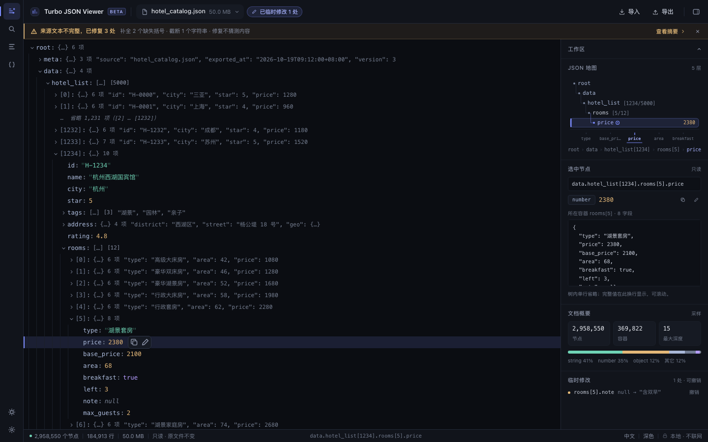
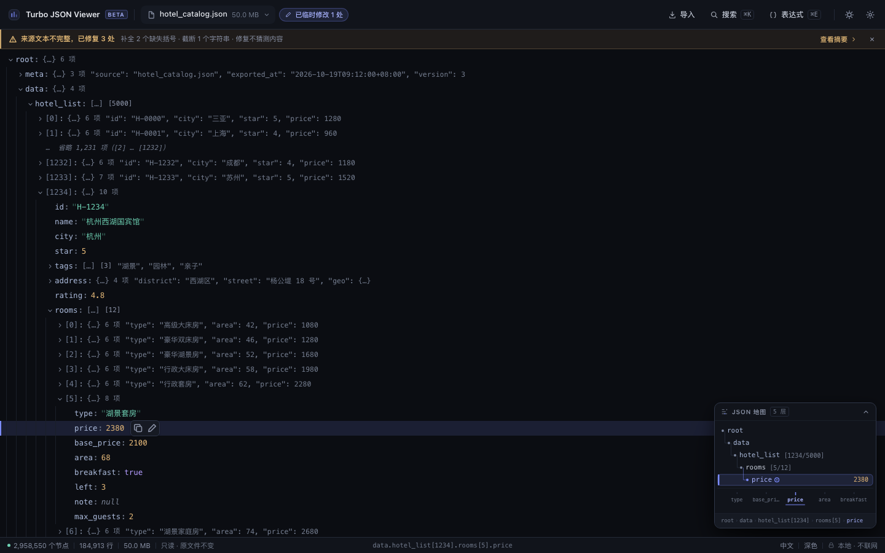
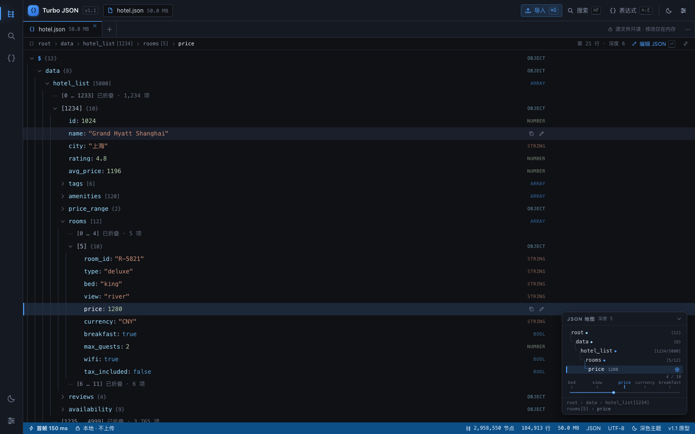
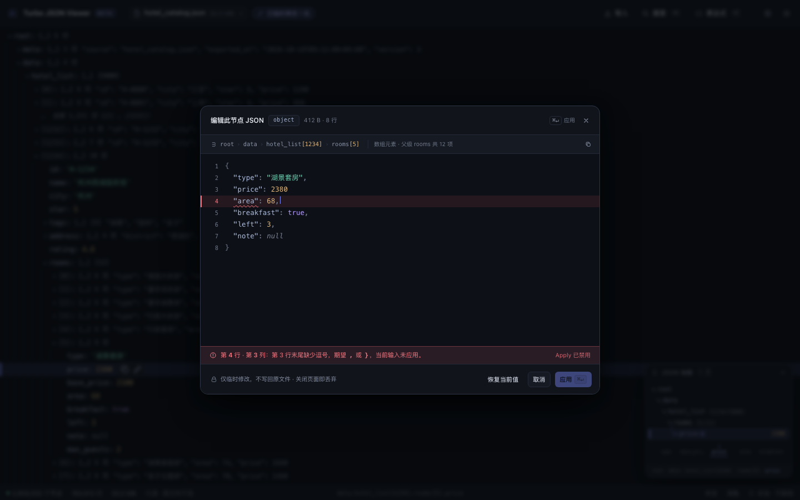
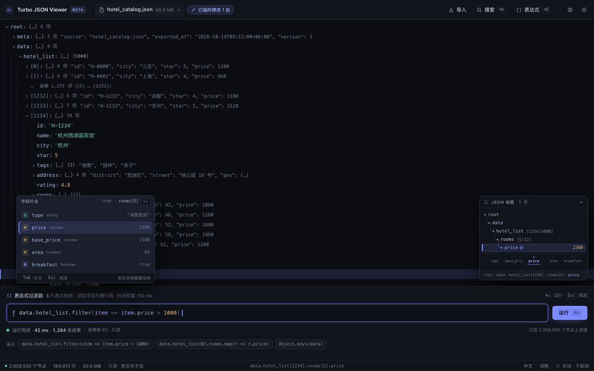
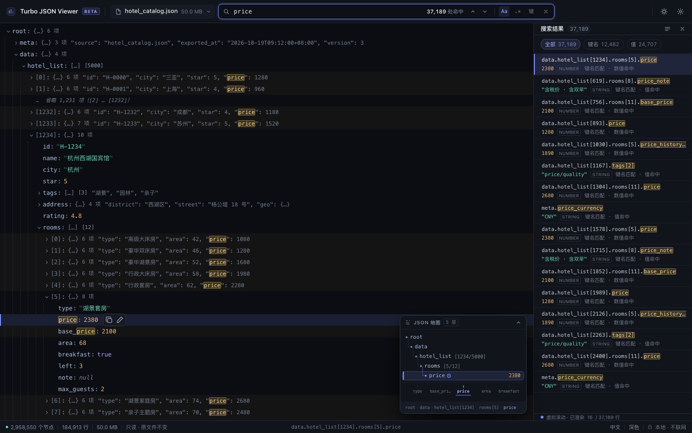
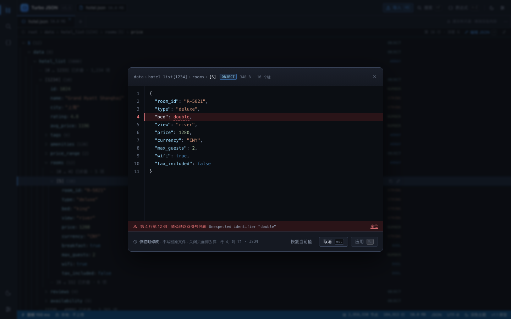
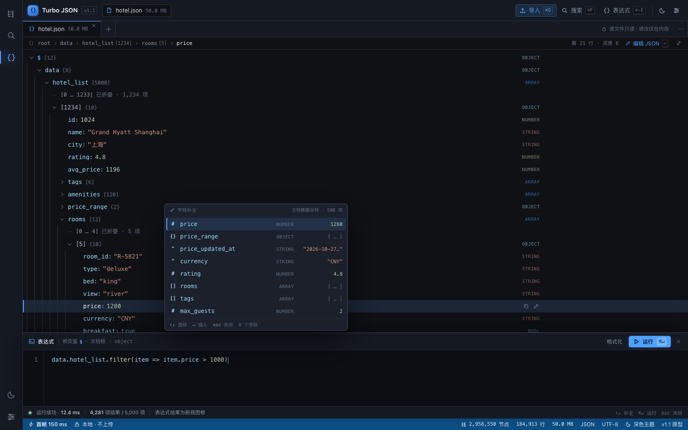
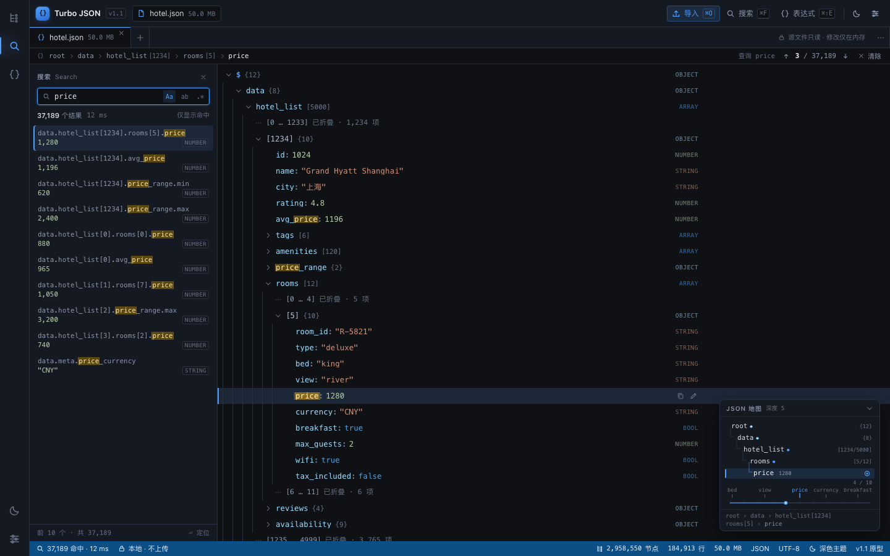
| 维度 | A · Graphite / Indigo | B · Slate / VS Code |
|---|---|---|
| 核心气质 | 安静、紧凑、定制感强；接近 Linear / Raycast | IDE、结构感强；接近 VS Code，熟悉度高 |
| 密度 | 24px 行高，一屏更多数据；1280×720 下会自动滚到选中行 | 26px 行高，一屏约 29 行；右对齐类型列更容易扫读 |
| 导航骨架 | 单层顶部工具栏；无活动栏，视觉更轻 | 48px 活动栏 + 标签条 + 工具栏 + 状态栏；更像 IDE |
| 颜色纪律 | 靛蓝只给焦点/动作；语法色更克制 | 蓝色只给动作/焦点；语法色对比更高，VS Code 熟悉 |
| JSON 地图 | 右下浮层，层级塔 + 兄弟刻度，面包屑完整 | 右下浮层，层级塔 + 兄弟刻度 + 全局位置轨道 |
| 主要风险 | 对习惯 IDE 的用户可能“少一点结构感” | 容易被视为 VS Code 仿品；活动栏对单文档工具偏重 |
| 产品契合 | 单文档只读查看器；密度优先；更独特 | 喜欢 VS Code 工作流的开发者；结构优先 |
A 的密度、靛蓝焦点与单层工具栏更贴合“本地只读、极速、克制”的定位，也更不容易显得像现成 IDE。建议保留 A 的 24px 行高与浮层地图；从 B 借两点：① 可选的右对齐类型列（帮助快速扫读）；② 搜索结果侧栏的显式“共 N 条 + 上一个/下一个”结构。
两套均为纯静态、零外链；截图脚本：node prototype/visual/shoot.mjs。
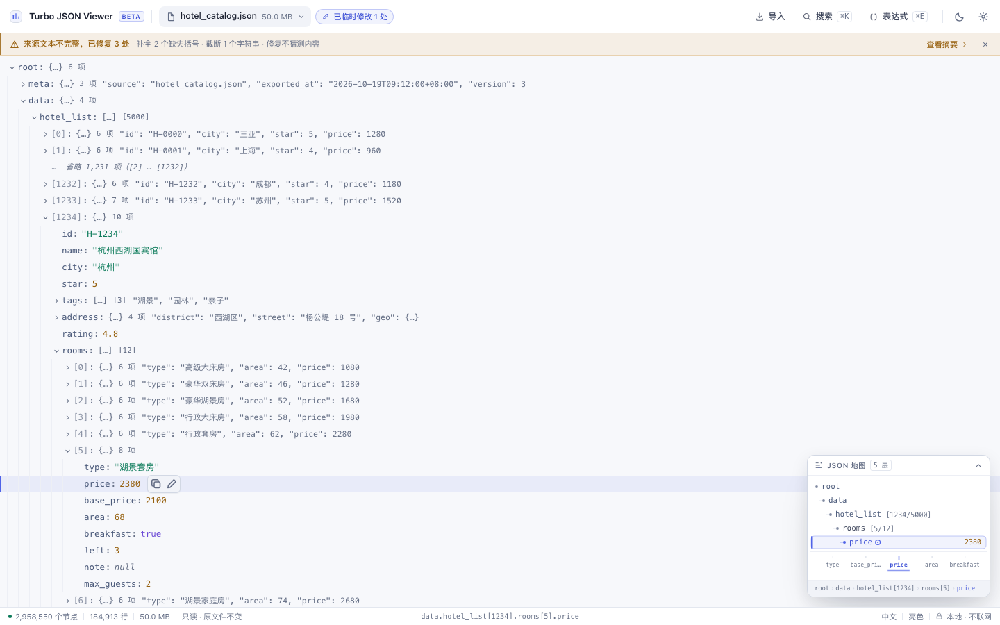
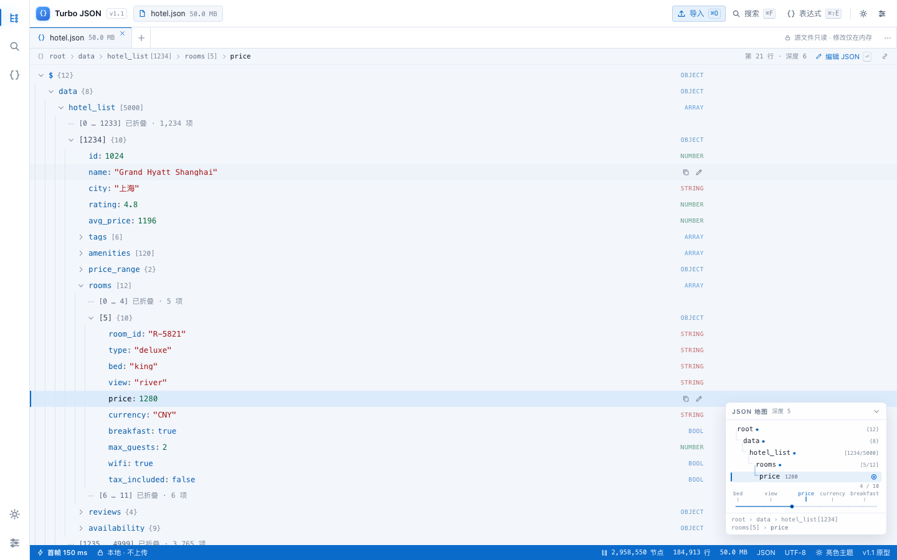
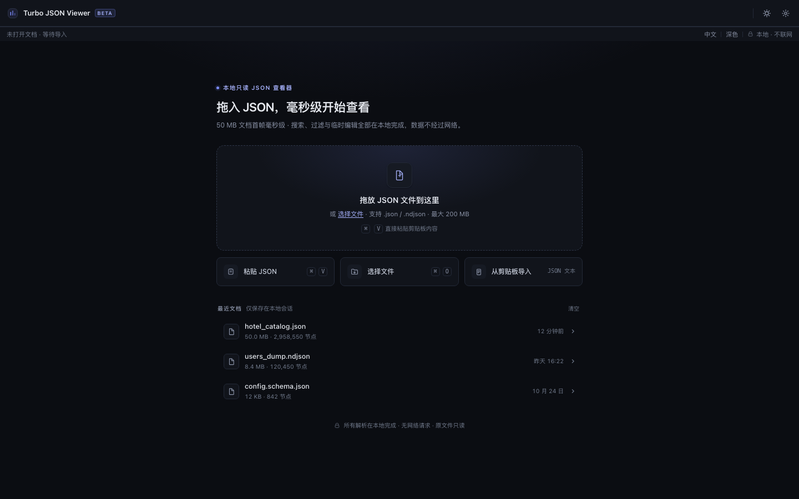
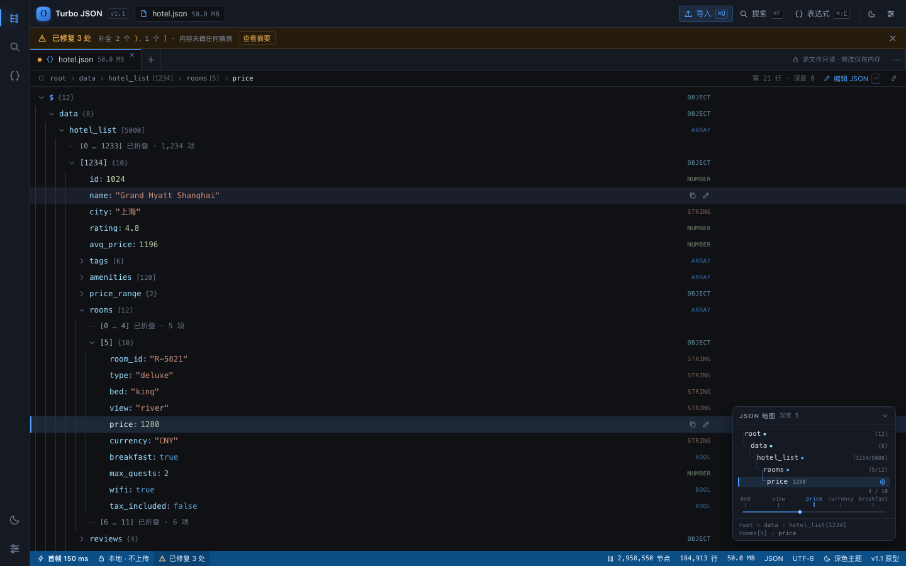